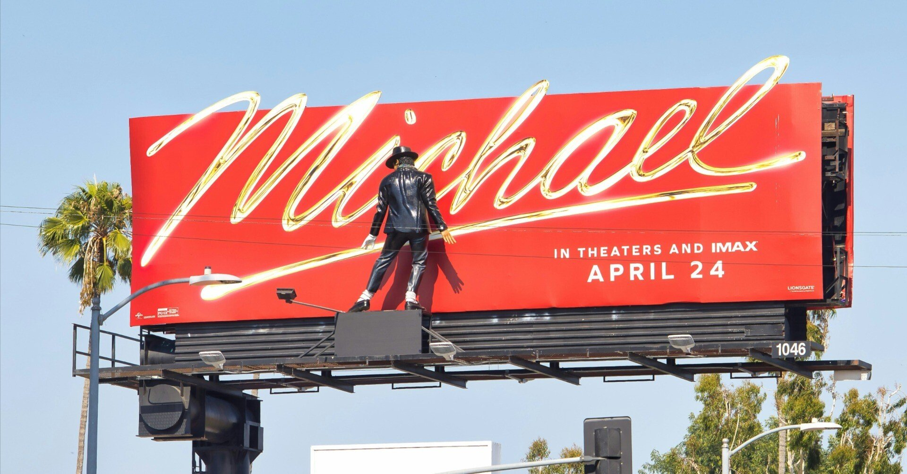

時代を彩る名曲は数あれど、生き方そのものが最大の作品といえる人物は数少ない。その一人であるマイケル・ジャクソンの伝記映画が、日本でも公開された。
『007 スカイフォール』や『ラストサムライ』などを手がけたジョン・ローガンを脚本家に迎え、『イコライザー』シリーズで知られるアントワーン・フークアがメガホンを取った『Michael/マイケル』だ。
主演はマイケルの甥にあたるジャファー・ジャクソンが務める。
死去から15年以上を経ても、その輝きが色褪せないマイケルの伝記映画となれば、世界中のファンが注目することは必然。その大役を、ジャファーは約2年間に及ぶオーディションを経て見事に射止めた。
作中ではまるでマイケル本人が宿ったかのような身のこなしや声によって、ステージパフォーマンスを再現してみせている。
滑らかな足さばき、耳に残る独特なかけ声、獲物を見据えるような鋭い眼差し。その一つ一つは単純に「本人のDNAを受け継いでいるから」の一言で片づけられるものではない。叔父に対する深いリスペクトと、たゆまぬ努力の成果だと思うと、この映画が放つエネルギーの理由がわかった気さえしてくる。
クイーンを題材にした『ボヘミアン・ラプソディ』を観て、華やかな表舞台に立つまでの苦悩や仲間たちとの友情を描く物語に夢中になった。その後、『ロケットマン』『名もなき者／A COMPLETE UNKNOWN』にも熱中した身にとって、『Michael/マイケル』も当然楽しみにしていた。
こうした映画から受け取ったものは、音楽の素晴らしさだけではない。周囲の期待や重圧を背負い、逆境を跳ね返すように作品を生み出しながら自らの人生を切り開いていく。その力強さに、何度も勇気をもらってきた。
人生は、勝つか負けるかだ。俺みたいに製鉄所で働くか？……戦う覚悟はあるか？
マイケルはアメリカ中西部の労働者家庭に生まれ、わずか9歳で兄弟グループ・ジャクソン5の一員としてレコードデビューした。11歳の頃にジャクソン5がリリースした「ABC」では、ビートルズの「レット・イット・ビー」に代わって全米総合チャート1位を獲得している。
当時から歌唱力はずば抜けていたが、その裏には父ジョセフによる厳しい指導があった。
幼少期から一家が一丸となって成功をつかんだからこそ、やがて浮き彫りになる父との確執や兄弟との関係は、マイケルの宿命でもあったのだろう。
本作は、その子ども時代にも丁寧に時間を割いている。世界的なポップスターになる前に、父の期待と恐怖の中で歌っていた一人の少年がいた。その姿が描かれるからこそ、後年の栄光の眩しさと、その陰にある孤独の深さが胸の奥に迫ってくる。
キング・オブ・ポップとも称されるマイケルは稀代のエンターテイナーであり、ステージ上の類まれなるパフォーマーだと思っていた。もちろんその認識は本作を鑑賞した後も変わらないが、驚いたのはマイケル自身が楽曲制作に打ち込み、いくつもの作品を生み出してきた生粋のクリエイターでもあったことだ。
ソングライターとして150曲以上を手がけ、クインシー・ジョーンズをはじめとする優れた共同制作者とともに、独自の音楽を作り上げていった。頭の中で鳴っているリズムやベース、旋律を声で録音し、それを実際の演奏へと組み上げていく。その制作方法からも、身体そのものが一つの楽器だったことがわかる。
さらに、当時としては破格の規模とストーリー性を備えたミュージックビデオ（ショートフィルム）を作り、音楽を「聴くもの」から「観るもの」へと押し広げた。そこには、人種差別や暴力、社会の分断といった根深い問題に真正面から向き合うマイケルの姿があった。
ライブではショーアップされたステージで軽やかに踊りながら歌い上げる。誰にも真似のできない演者であると同時に、強い社会意識を持つ作り手としての顔もあった。その両面性が、僕には“マイケル”という人物の強烈な魅力として映ったのだ。
本作が扱うのは、ステージ上の輝かしい功績だけではない。1984年、ペプシのCM撮影中に頭部へ大やけどを負ったマイケルは、受け取った和解金を治療先の病院へ寄付し、熱傷治療のために役立てた。入院している子どもたちと接し、会話を交わす場面もある。
映画的な演出は加えられているだろうが、事故後の寄付や患者たちとの交流は史実に基づいている。こうした行動にも光を当てることで、観客がマイケルの内面に触れるきっかけを与えている。
「スリラー」「今夜はビート・イット」「ビリー・ジーン」など、世界を変えた名曲たちが鳴り響くたびに、スクリーンの中の時代が鮮やかに立ち上がっていく。まさに、本作ならではの高揚感だ。
マイケルをめぐる疑惑や論争が十分に描かれていない、という批判もある。こうした点を含めれば、その人生すべてを捉えた作品とは言いがたい。しかし、数々の楽曲とパフォーマンスをこれほどまでの密度とスケールで追体験できる映画もまた、ほかにない。
世界中の人々に希望を与え、生き方そのものを最大の作品として残したマイケル。彼が音楽の可能性を信じ、その力で世界を塗り替えていった時代の熱をここまで鮮やかに感じられるのは、この作品だからだろう。
https://www.youtube.com/watch?v=AvHnOMXwMYU